<section role="doc-endnotes">内の内容も取り出して、ブログに貼り付ける必要があります。前回、岩盤まで地下を掘り進めたが、マグマは見つからなかった。今回こそマグマを見つけ、砂利の自動供給装置を作るのが目標だ。まずは地下をブランチマイニングしてマグマを探す。
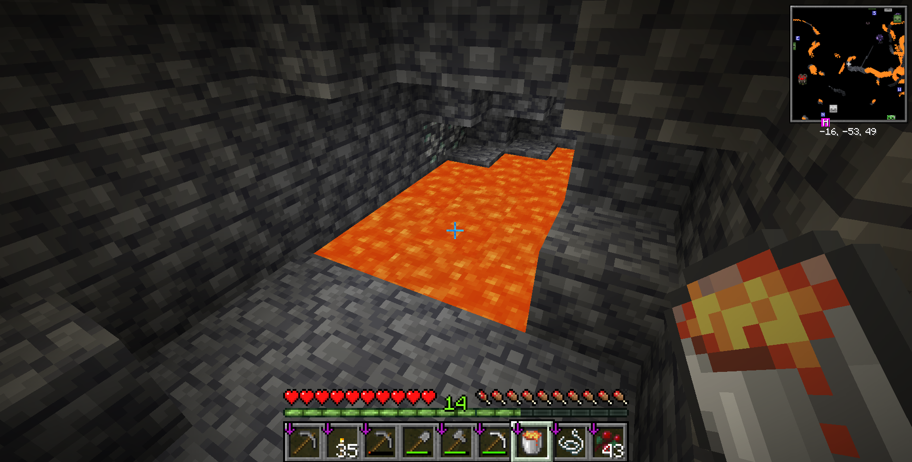
地下に掘り進めると、マグマが見つかったので、バケツで回収する。というわけでマグマが見つかったのでこれで砂利の自動供給装置を作ることができる。
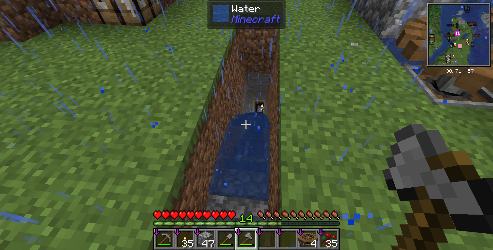
あああああ！！地下へのトンネルに水が流れ込んでいってしまった！
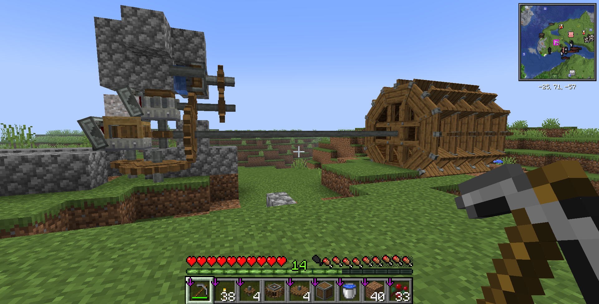
まあそういうハプニングがあったものの、砂利の自動供給装置を作ることができた。ふるいの右上のあるのがミルで、さらにそのミルの右上にあるのがドリルだ。ドリルから流れる水と、ミルのニマス上にあるマグマから丸石を作り、ドリルで丸石を掘り、ミルで砂利に変換し、ふるいで鉄塊を作るという流れになっている。右側にあるのは大きな水車で、この装置の動力源である。小さい水車と比べると、大きな水車は回転速度が遅いかわりに応力が大きいので、たくさんの装置をまとめて動かすのに適している。
とはいえ、水車の回転速度が遅いので、装置全体の遅くなってしまう。そこで、今回は歯車を使って回転速度を上げることにした。まず二つの装置を繋いでいたシャフトを撤去して歯車を置くスペースを作る。
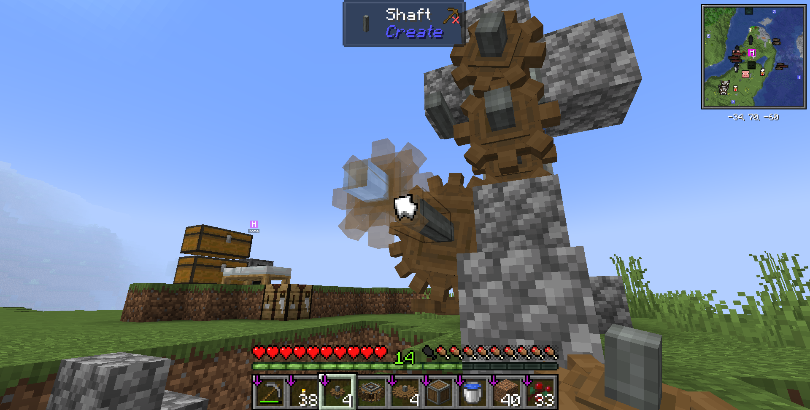
まずは小さい歯車を置く。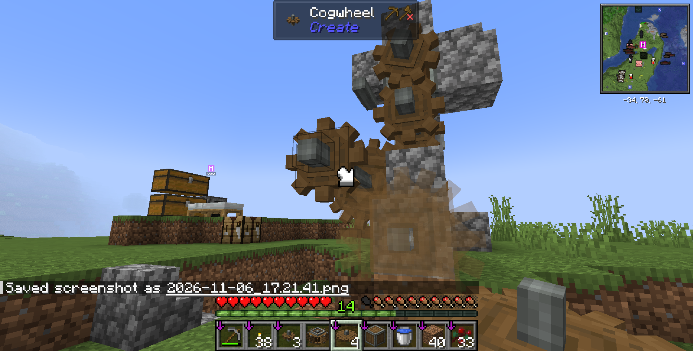
次に大きい歯車を、さっき置いた小さい歯車に噛みあうように置く。これで、大きい歯車を回転させると、小さい歯車は大きい歯車の回転速度の二倍の速度で回転するようになる。つまり、ドリルの回転速度が二倍になるということだ。今回はもっと早くしたいので、さらにつなげていく。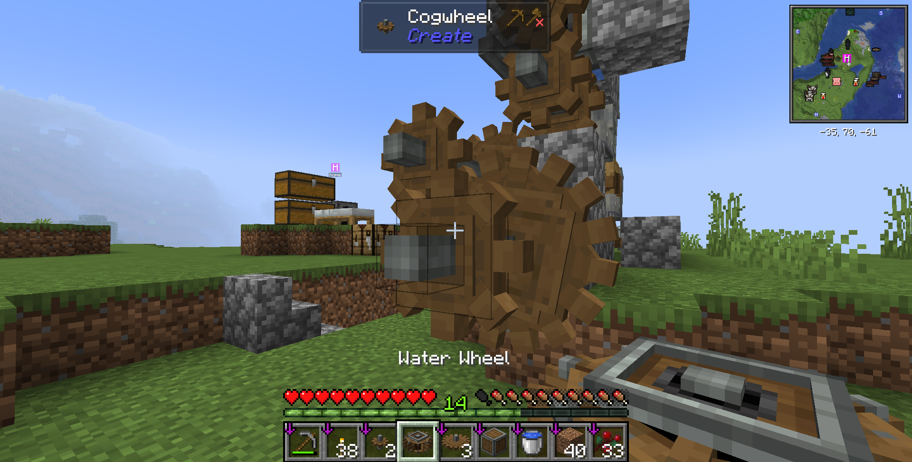
小さい歯車を大きい歯車の軸に合わせて置く。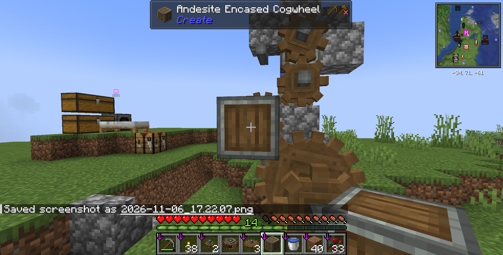
次に、ちょっと前に置いた小さい歯車に安山岩ケーシングを被せる。こうしないと、回転速度の違う軸が繋がってしまって、歯車が壊れてしまう。なお、安山岩ケーシングを歯車に被せても、安山岩ケーシングは消費されない。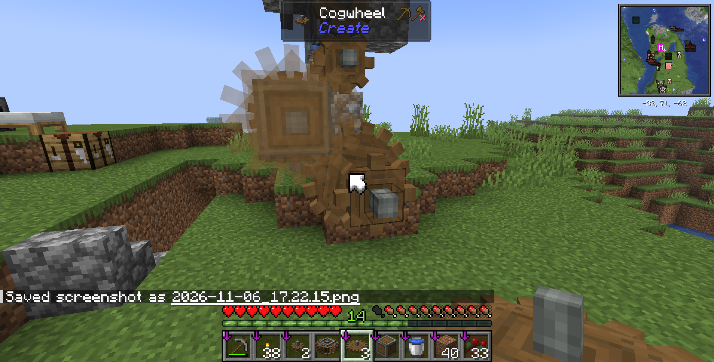
小さい歯車に噛みあうように、大きい歯車を置く。これで、大きい歯車の回転速度の二倍の速度で小さい歯車が回転するようになる。つまり、ドリルの回転速度が二×二で四倍になるということだ。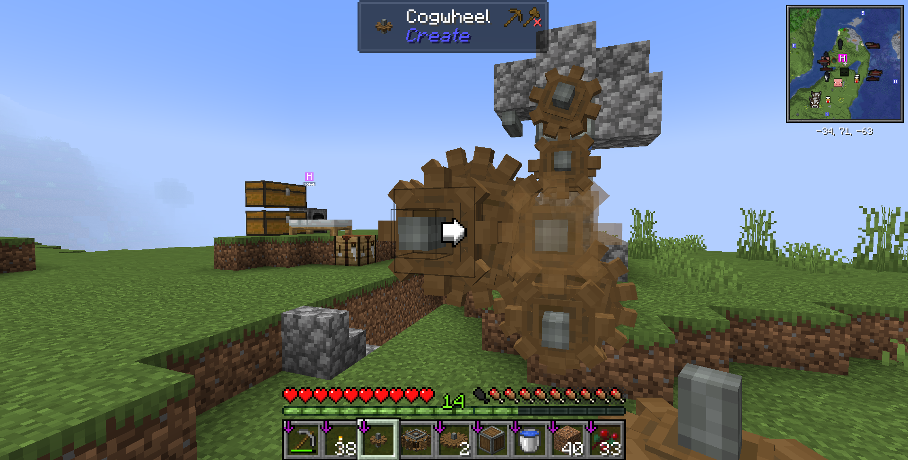
また大きい歯車の軸に小さい歯車を置く。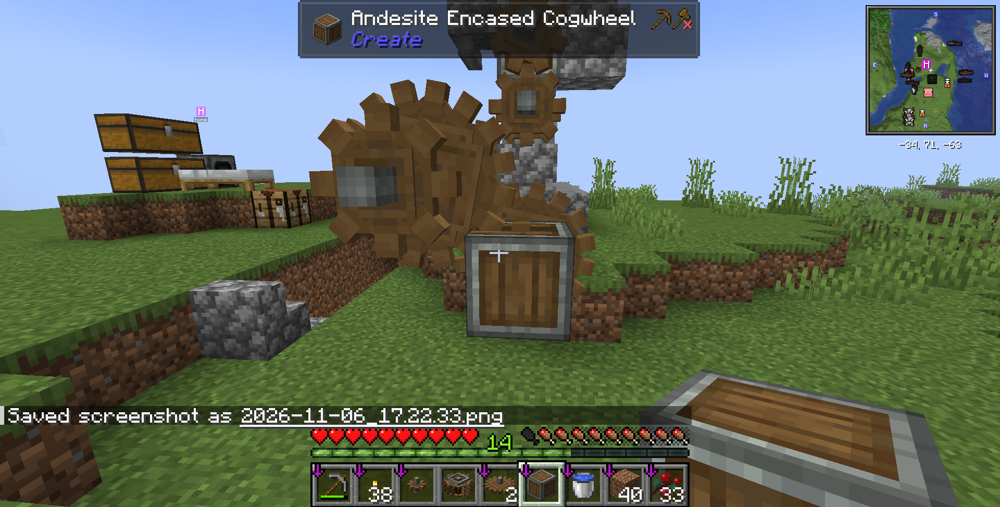
小さい歯車に安山岩ケーシングを被せる。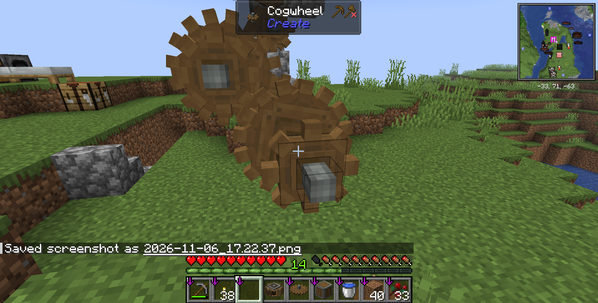
大きい歯車を置く。これで、大きい歯車の回転速度の二倍の速度で小さい歯車が回転するようになる。つまり、ドリルの回転速度が八倍になるということだ。続けて、また大きい歯車の軸に小さい歯車を置く。
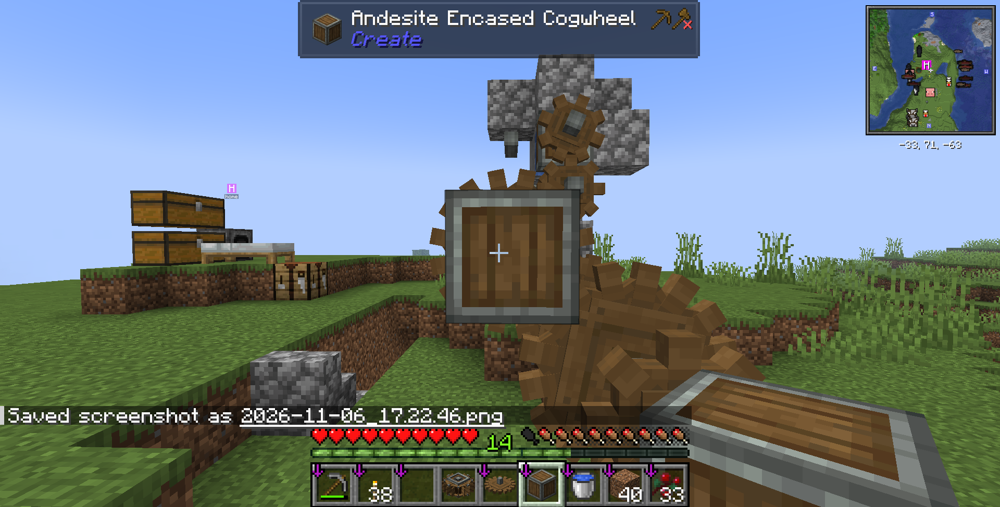
小さい歯車に安山岩ケーシングを被せる。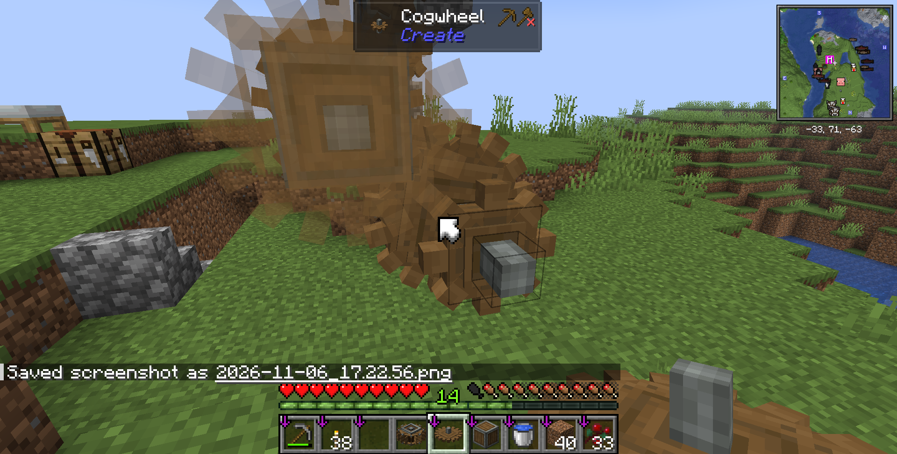
大きい歯車を置く。これで、大きい歯車の回転速度の二倍の速度で小さい歯車が回転するようになる。つまり、ドリルの回転速度が十六倍になるということだ。今回はこんなもんにしておこう。
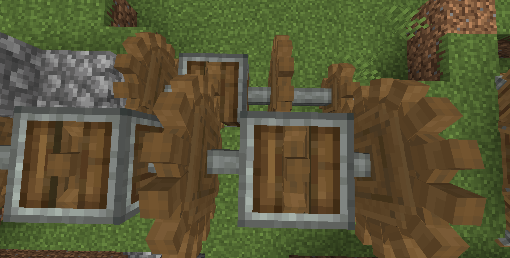
全体としてはこんな形。それぞれの安山岩ケーシングに入った歯車は、回転速度の異なる軸が繋がらないように、左側の面だけ他の歯車と接続している。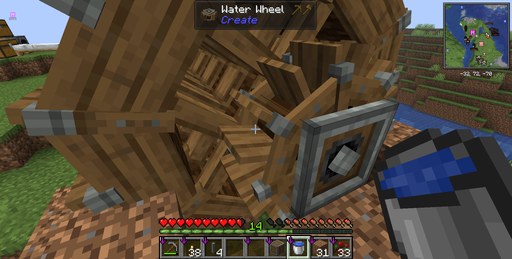
ここでちょっとした裏技を使う。回転速度の違う動力源を繋ぐと、一番早い動力源の回転速度に合わせて、他の動力源も回転するようになる。つまり、小さい水車を大きい水車の軸に繋ぐと、大きい水車の回転速度が小さい水車の回転速度に合わせて回転するようになる。これを利用して、ドリルの回転速度をさらに上げることができる。というわけで、後は水車に水を流せば完成。
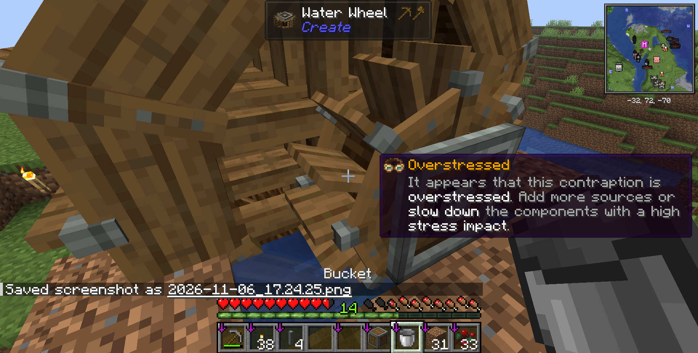
あー。どうやら動力源が足りなかったようだ。回転速度を早くしようとすると、沢山の動力が必要になるのだ。こういうときは水車をつけ足して、動力源を増やすといい。というわけで、水車をつけ足す。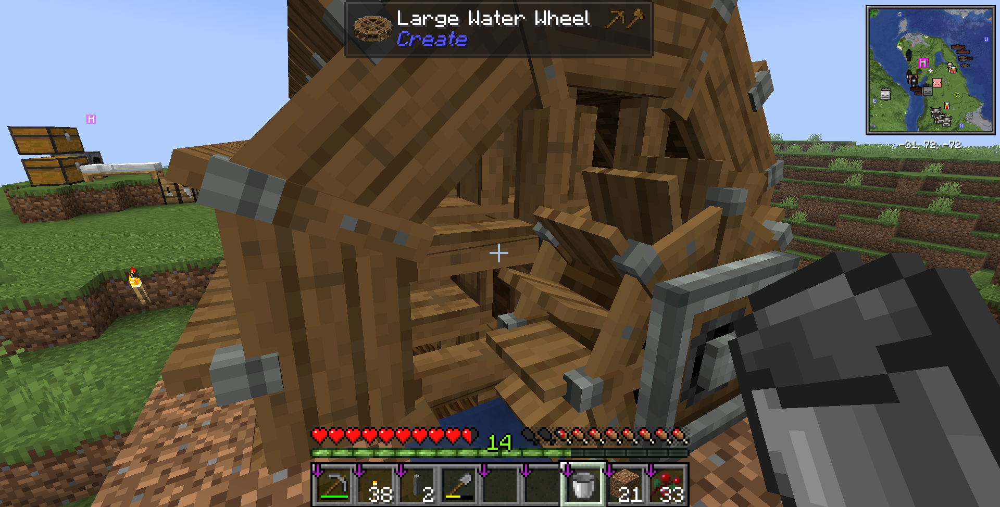
二個付け足したら、応力不足が解消された。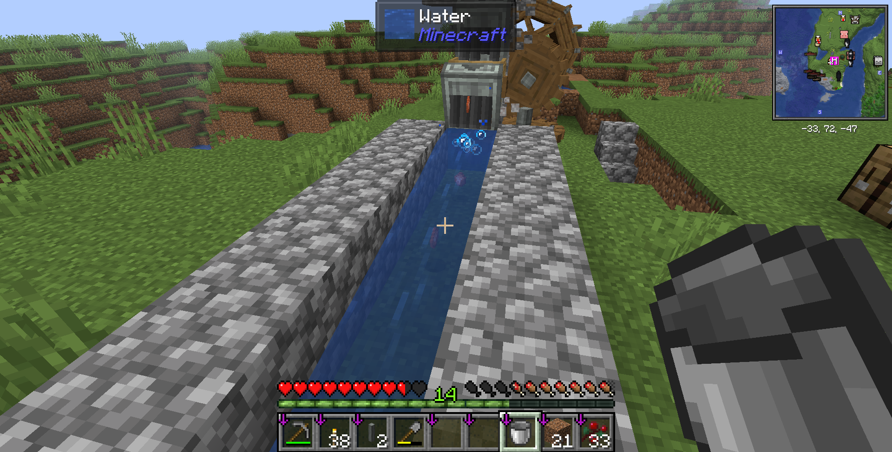
沢山アイテムが流れていく。これで砂利の自動供給装置が完成し、アイアンファームも完成した。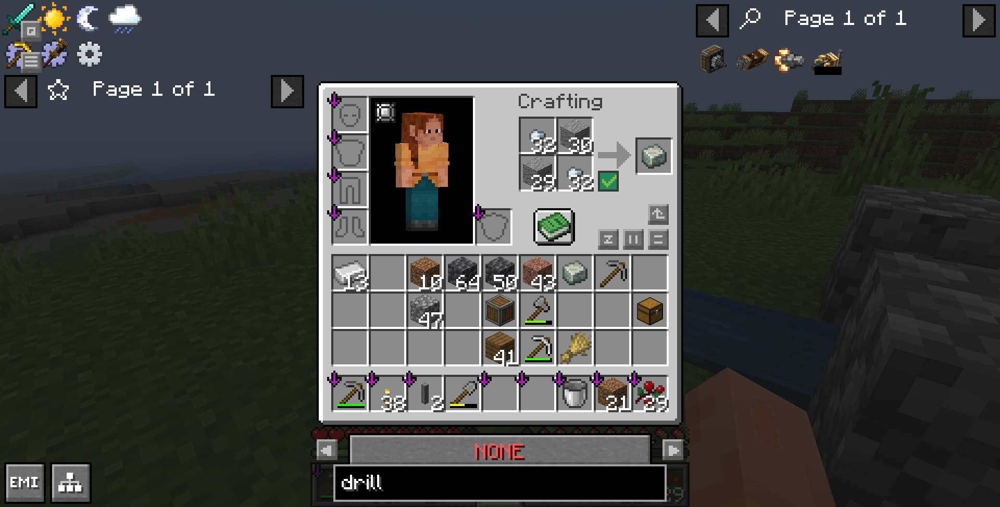
これで安山岩合金も作り放題。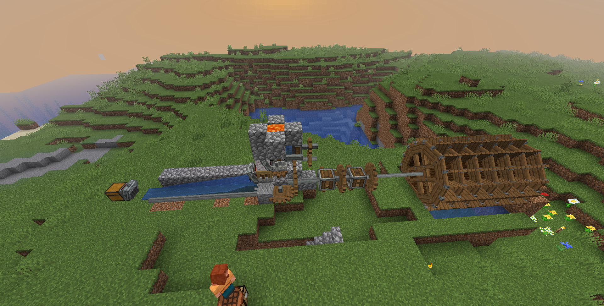
最終的な装置の全貌はこんな感じ。次回は、食糧生産を自動化したい。いつまでもスイートベリーを食べ続けるわけには行かないからね。
この記事はTypst 1.50.1の実験的なHTML出力機能を用いて生成されました。
ソースコードのリポジトリはこちら